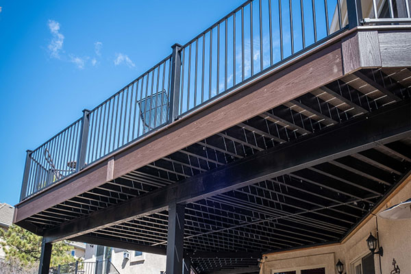
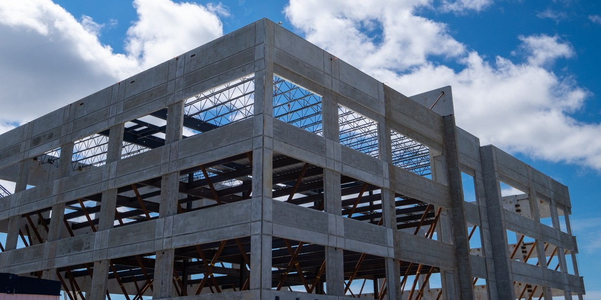
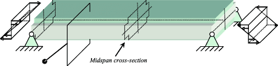

Superstructure – Above Ground
The superstructure of Kelham Rise has been designed to meet the performance requirements of a modern high-rise, mixed-use development. The proposed steel-framed system with composite concrete floor slabs ensures structural efficiency.
 
Structural System: Steel Frame + Composite Decking
The building frame will consist of S355-grade steel columns and beams with metal decking and in-situ concrete composite floor slabs, providing a lightweight yet strong structure.
Fire Protection Strategy
To comply with UK Building Regulations, all primary steel members will be coated with intumescent paint. Composite floor slabs provide horizontal compartmentation, and escape stairs and lift cores are protected using concrete framing.
Material Specifications
| Material | Specification |
|---|---|
| Steel Frame | S355-grade universal steel columns and beams, providing strength and flexibility |
| Floor Slabs | Composite slabs using metal decking and in-situ concrete |
| Columns & Beams | Universal steel sections with high load-bearing capacity |
| Cladding | Non-combustible material with weatherproof coating |
| Fire Protection | Intumescent paint on steel members (90-minute fire rating) |
| Insulation | Non-combustible insulation systems for fire and acoustic compliance |
Integration with Building Services

The structure will integrate service routes using BIM, ensuring that electrical, data cables, sprinkler systems, and mechanical ductwork are efficiently accommodated.